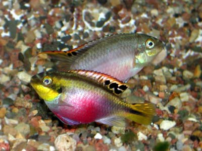
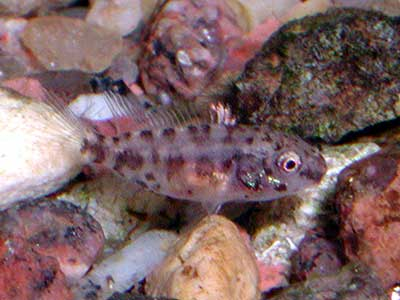
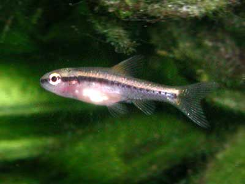

Kribensis fry
In September, 2002, I started new 100 liter tank.
Conditions were quite good, and small cichlids ( Pelvicachromis pulcher ) immediately spawned and started caring for their eggs.
So in October there appeared about 40 new small fry.

Littlle Pelvicachromis pulcher (Kribensis).
Two weeks old and 10mm long.

A couple of kribs dance

Mask color.

in a tree")
a little kribensis, age 2.5 weeks, size 12mm

4 weeks, 16mm without tail. Its color has not yet matured.

A month after the barbuses were housed
in the new aquarium, I found a pair of
quite mature new little barbuses.
(size: 10mm, age: about 3 weeks)